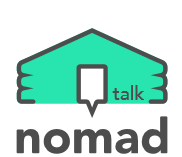

 FAQ
● nomad talk login (нэвтрэх).
nomad talk программ нь facebook хаягаар л нэвтрэх боломжтой.
● төхөөрөмж солих (өөр утас зэрэг) нэвтрэх гэж байгаа бол.
nomad talk программыг хэрэглэж байгаад гар утсаа солих зэрэг өөр төхөөрөмжөөр нэвтрэх үед шинээр нэвтэрсэн төхөөрхөмжинд мэссэнжрийн сүүлд хэрэглэгдсэн хэсэг л хадгалагдаж харагдах боломжтой.
Энэхүү nomad talk үйлчилгээ нь хамгийн сүүлд харилцсан мэссэнжр л хадгалагддаг учраас юм.
● Нэг хаягаар олон төхөөрөмж (өөр утас зэрэг) нэвтрэх.
nomad talk программ нь олон төхөөрөмжнөөс нэг хаягаар орсон тохиолдолд хамгийн сүүлд нээсэн төхөөрөмжнөөс л мэссэж явуулах боломжтой.
олон төхөөрөмжнөөс нэвтрэх үед мэссэнжрт алдаа зааж мэссэнжрт доголдол үүсэх магадлалтай.
● найз хасах/устгах.
Найзын хүсэлтээр авсан хүнийг найзаас хасах болон устгах бол тухайн найзтай 1:1 харилцсан мэссэж автоматаар устах болно.
● мэссэжийг мэдээллэх.
nomad talk программ нь бүх мэссэжинд дуудлага ирэх тохиргоотой бөгөөд дуудлага тохиргоог өөрсдөө тааруулах боломжтой.
мэссэжний дуудлага тохиргоо нь мэссэжний харилцаж буй хэсгийн дээд талын хэсэгт харагдах болно.
● nomad talk программыг устгахаас өмнө түр хүлээгээрэй.
nomad talk .
программыг устгаад дахин суулгах тохиолдолд урьд нь байсан мэссэж болон мэдээллүүд алга болох болно.
заавал 'программ тохируулга'хэсгээс программыг хадгалсаны дараа дахин суулгаж background хийж өгнө үү.
● хэрэглэгчээс гарах.
nomad talk программаас гарсан тохиолдолд 30 хоногийн дараа дахин хэрэглэгчээр бүртгүүлэх боломжтой.
30 хоногийн дараа дахин бүртгүүлэхдээ урьдын хаягаар бүртгүүлэхэд найзууд болон мэссэнжрүүд хэвээр байх болно.
● зар оруулах.
nomad talk программ нь үнэгүй үйлчлэх болно.
Үйлчилгээ үзүүлэх явцад программын нэмэлт өөрчлөлт зэрэг зүйлсээс шалтгаалан хэд хэдэн газарт зар оруулах төлөвтэй байна.
Хэрэглэгч та бүхэн ойлгож хүлээж авна гэдэгт итгэлтэй байна.
● nomad talk FAQ нь....үргэлж урагшлах болно . ^^